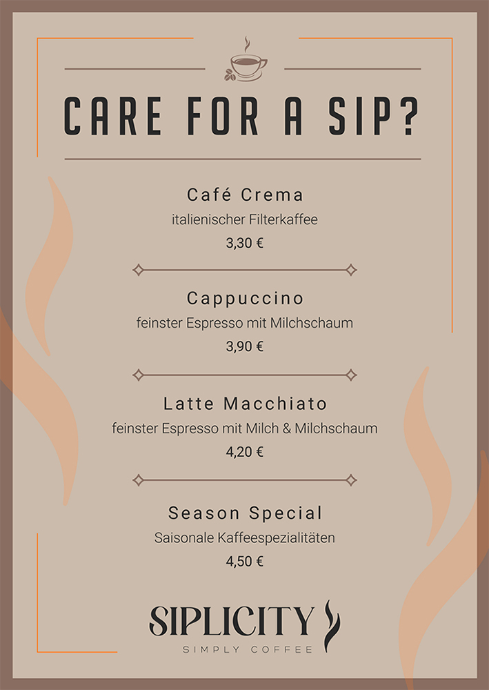
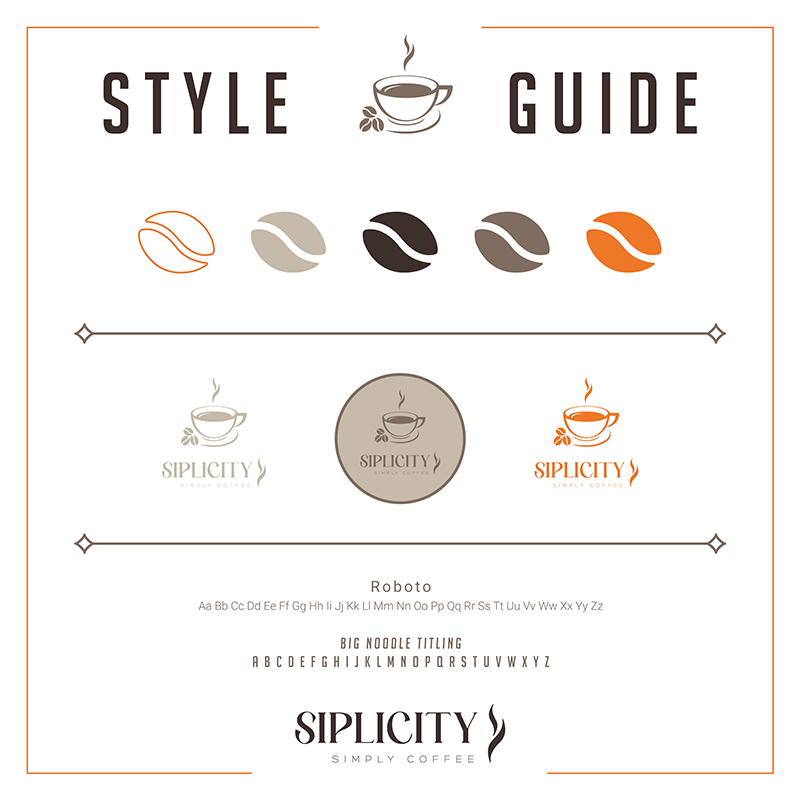
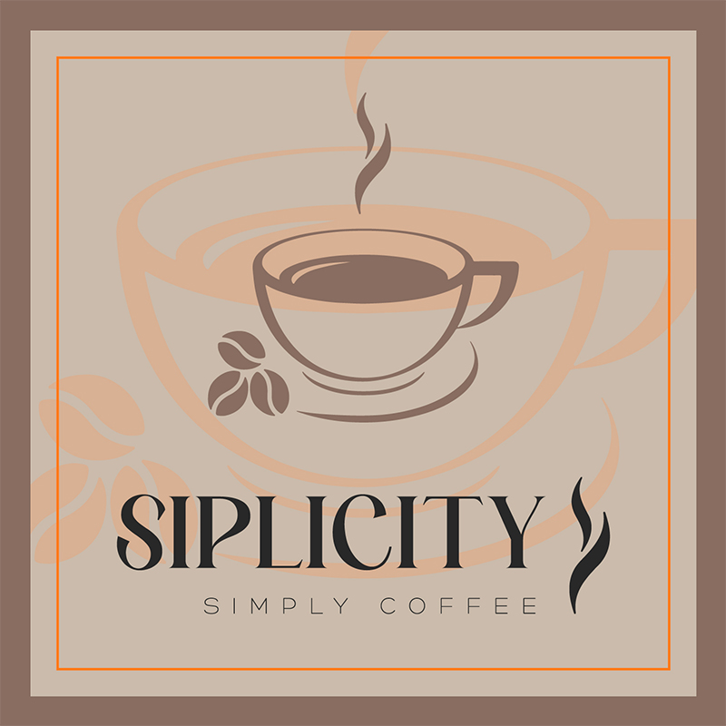
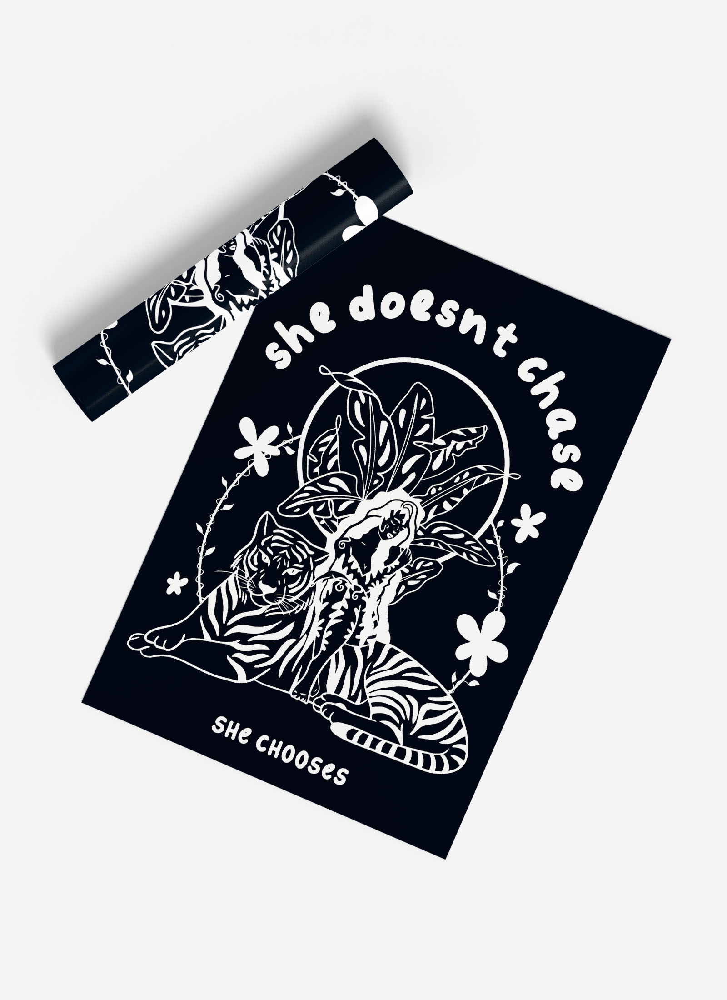
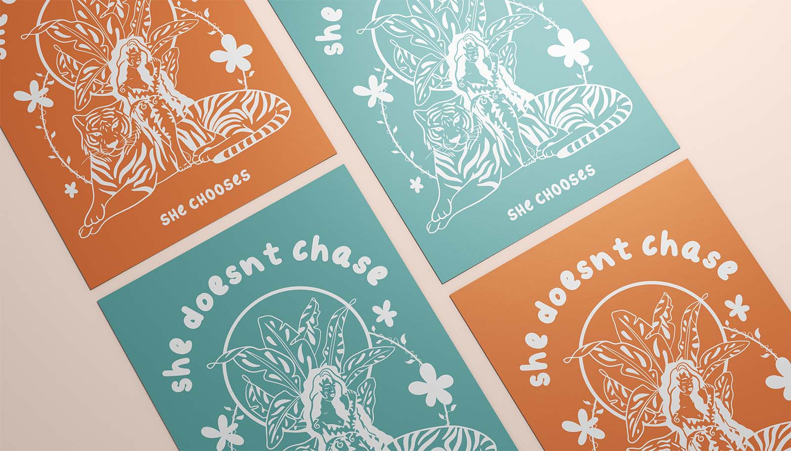
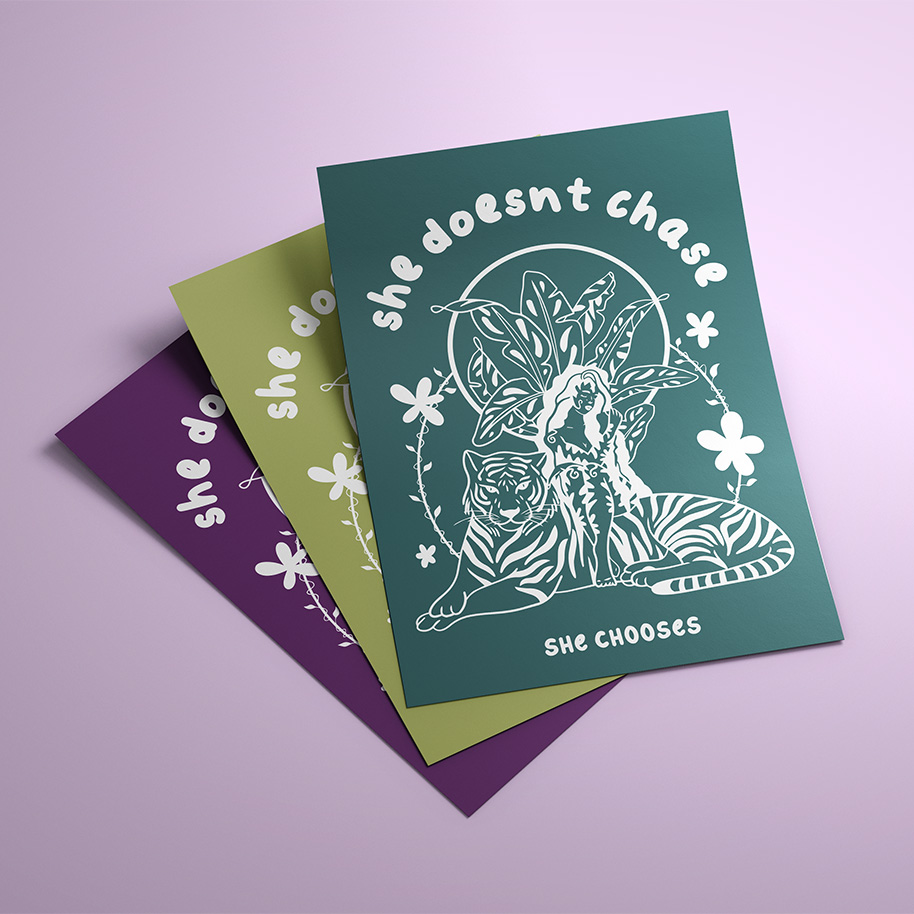
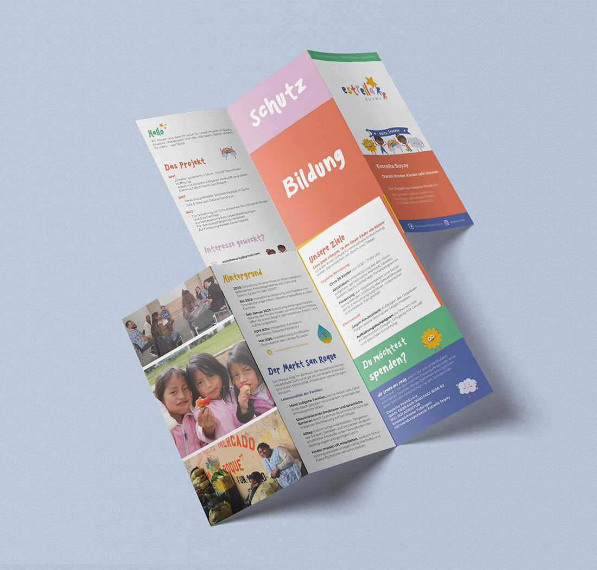
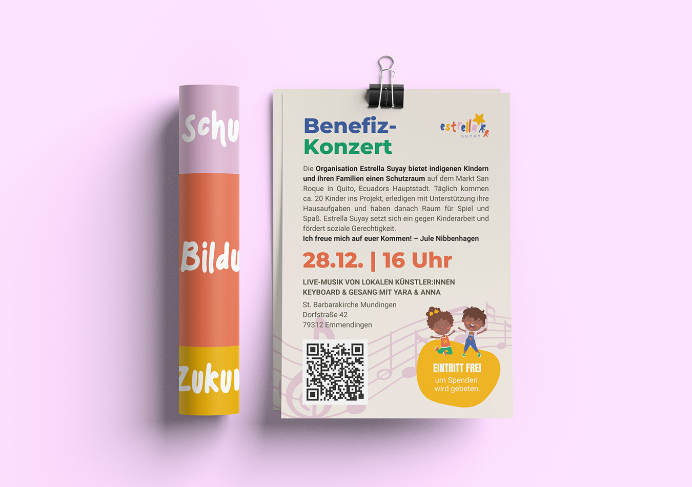

Siplicity is a calm organic coffee shop that communicates comfort, balance and a warm atmosphere.



#loveislove #feminism #equality #humanrights


Together with my roommate we designed a flyer for her charity project Estrella Suyay to raise awareness and stop child work and give them the education they deserve.
In my academic, professional, and personal life, I place great importance on communication, a sense of responsibility, and genuine commitment. Creativity accompanies me every day – I love to visualize ideas and explore new approaches.
In my previous job, I independently managed and led many projects. Through this, I learned to take responsibility, make decisions, and advance creative processes with both structure and passion.
I work conscientiously and with attention to detail, but I also highly value open exchange within a team – because, in my experience, the best ideas are usually created together.
Email: jacqueline.weyh@gmx.de
Date of Birth: June 3rd 1995
Address: Nikolausberger Weg 80, 37075 Göttingen
2020 – 2025
Graphic Design & Social Media | Digital Agency Joofy GmbH
Print media, corporate branding, social media content creation & management
2014 – 2015
Media Production | PAC Advertising Agency
Graphic design, social media, marketing, photography assistance, and digital image editing
2019 – 2023
Georg-August-University Göttingen
Master of Arts, North American Studies
Minor: Gender Studies
2018 – 2019
University of Kassel
Master of Arts, English and American Studies
Minor: Art Studies
2017
Semester Abroad (as part of BA program)
Radford University, Virginia, USA
2015 – 2018
University of Kassel
Bachelor of Arts, English and American Studies
Minor: Art Studies
2011 – 2014
Albert-Schweitzer-School Hofgeismar
General University Entrance Qualification (Abitur)
2021
Creativity Techniques | University Göttingen
2021
Media Education | University Göttingen
2016
Public Relations and Communication | University Kassel
2018 – 2019
Course Instructor | Marie-Durant School, Bad Karlshafen
Planning and teaching of art classes
2018
Freelance Artist | Art Exhibition on the Fulda
Exhibition and sale of acrylic paintings